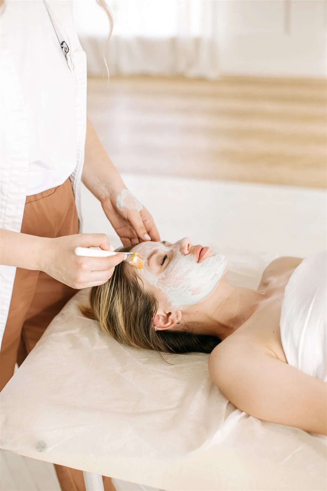
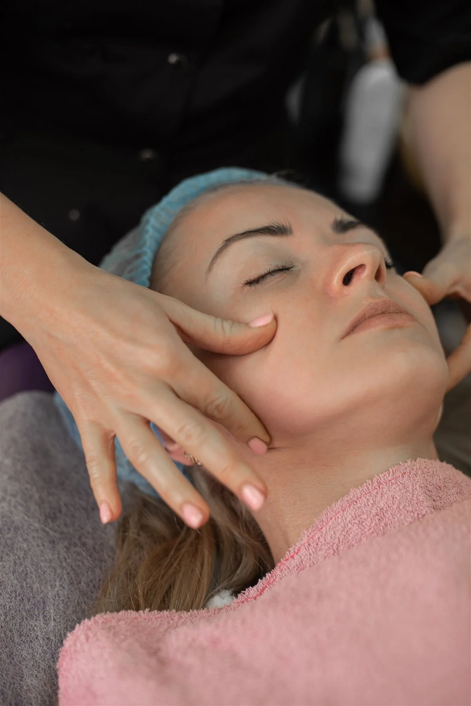

Belico arckezelések
Hidratálás és bőrmegújulásÉrtékes növényi összetevők és célzott hatóanyagok. Skin regeneration érzékeny bőrre vagy Hydro energy mélyhidratáló kezelés, személyre szabva.
Megnézem a kezeléstEliza Beauty Salon · Budapest
Szakértő gondoskodás a bőrödnek, nyugodt énidő neked. Sipos Eliza mesterkozmetikusként segítek megtalálni azt a kezelést, amire most igazán szükséged van.

Minden bőr más. A megfelelő kezelést a bőröd aktuális állapota és a személyes beszélgetésünk alapján választom ki.
Értékes növényi összetevők és célzott hatóanyagok. Skin regeneration érzékeny bőrre vagy Hydro energy mélyhidratáló kezelés, személyre szabva.
Megnézem a kezeléstPeptidekre épülő arc-, nyak- és dekoltázskezelések. A bőrfiatalító gondoskodást az igényeidhez és a kezelési tervedhez igazítom.
Megnézem a kezeléstSzemélyre szabott kezelés és segítség az otthoni rutin kialakításához. A 14–19 éveseknek szóló Tini Anti-Akné csomag külön is elérhető.
Megnézem az aknékezeléstMég nem tudod, melyik lenne neked való? Az első találkozáskor együtt találjuk meg a megfelelő irányt.

Sipos Eliza, mesterkozmetikus
Szia, Eliza vagyok. Hiszek abban, hogy egy jó kozmetikai kezelés a szép bőr mellett a jó közérzetről és az énidőről is szól.
A Beauty Academy szakmai trénereként és mesterkozmetikusként is az a célom, hogy a bőröd valódi igényeire figyeljek. Folyamatosan fejlesztem tudásomat, és minden kezelési tervet személyesen állítok össze.
Szeretném, hogy nálam megérkezhess, lelassulhass, és tudd: most minden figyelem a tiéd.
Ismerd meg ElizátKorábbi rossz tapasztalatok miatt sokáig nem mertem kozmetikushoz járni, de ez az itt töltött első alkalmat követően megváltozott. A bőröm minden kezelés után szinte ragyog, remekül érzem magam, és Eliza segítségével sikerült kialakítanom a helyes, bőrtípusomnak megfelelő arcápolási rutint. Szívből ajánlom!
Eliza nagyon kedves, csupaszív kozmetikus, a kozmetika csodaszép, tiszta, hangulatos, mindig örömmel járok ide vissza. Legutóbb a 10 alkalmas arcfiatalító kezelést vettem igénybe, és az eredmény magáért beszél, azóta több pozitív visszajelzést is kaptam ismerőseimtől. Csak ajánlani tudom Elizát!
A bőröd aktuális állapotából indulok ki. A hatóanyagokat és a kezelést hozzád igazítom.
Előre egyeztetett időpont, privát kezelés, figyelmes gondoskodás. Egy kis szünet a hétköznapokban.
Segítek kialakítani a bőrápolási rutinodat, személyre szabott tanácsokkal és termékajánlásokkal.
Ha az 5 alkalmas kúra után nem vagy elégedett, a kúra díjának 50%-át visszakapod.
Tudhatod, mire számíts, már az első találkozás előtt.
Írj az űrlapon vagy hívj fel. Hétfőtől péntekig, 9:00 és 16:00 között, előzetes egyeztetéssel várlak.
Megismerem a bőröd állapotát, az arcápolási szokásaidat és az eddig használt termékeidet.
A személyes terved alapján végzem a kezelést, amelyet relaxáló arcmasszázs egészít ki.
Praktikus tanácsokkal és személyre szabott termékajánlásokkal segítem a mindennapi bőrápolást.
Összegyűjtöttem néhány gyakori kérdést. Ha más is foglalkoztat, keress bizalommal.
Nem, a kozmetikámban kizárólag időpontra fogadok vendégeket.
Az első találkozás alkalmával a kezelés előtt diagnosztizálom a bőrödet, és felvázolom a kezelési tervet.
Igen, természetesen! Az első alkalmat követően elmondom, hogy mire figyelj a mindennapokban, milyen termékeket használj, hogy a bőröd a lehető legjobb törődést kapja.
Bankkártyával és készpénzzel is fizethetsz a szalonban.
Kérdésed van, vagy időpontot szeretnél egyeztetni? Keress bizalommal, és segítek megtalálni a számodra megfelelő kezelést.